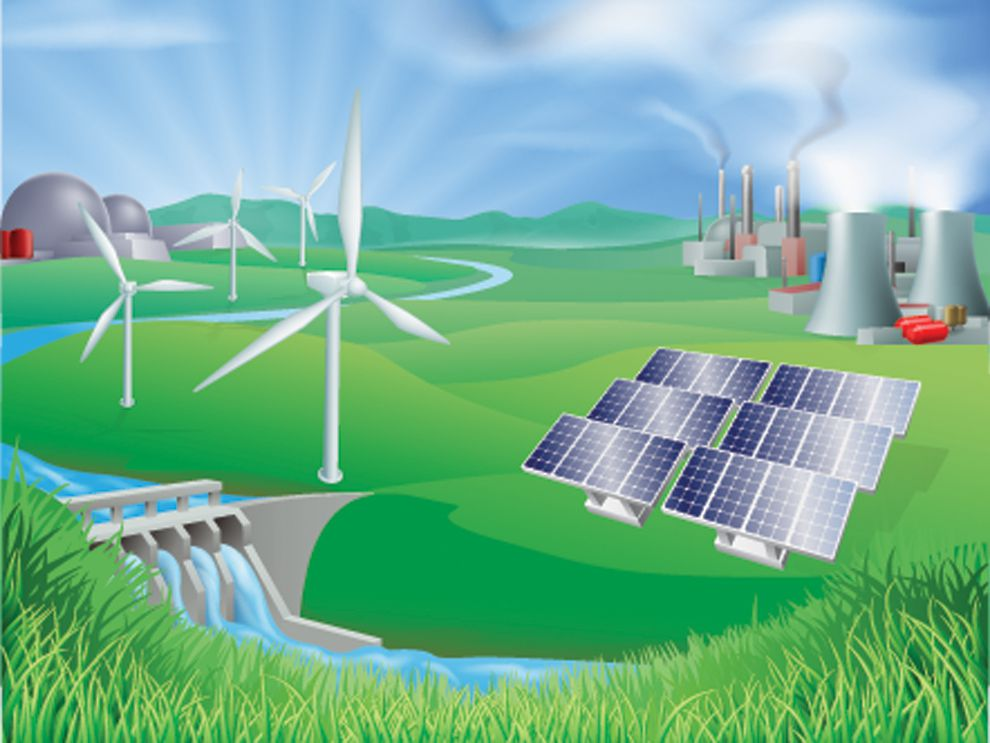

How Has Energy Consumption Changed Overtime?
By: Allyson Taylor, Luke Ellison, and James Martin
Purpose of Project
In this project we will be analyzing energy consumption data between the dates of 1960-2017 in the United States. We will look into how the prevalence of different energy sources (i.e. coal and hydroelectric) has changed over time and the usage of these energy sources by state.